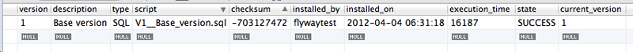
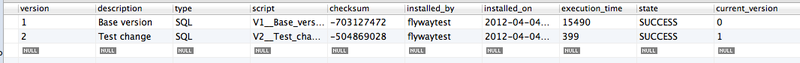

В этой статье я расскажу об одном из средств обеспечения версионности схем и управления миграциями БД — библиотеке Flyway. С поблемой версионности схемы базы данных рано или поздно приходится сталкиваться разработчикам любого приложения, опирающегося на СУБД. Увы, иногда эта проблема принимается в рассмотрение слишком поздно — например, если вопрос о внесении изменений в структуру базы встаёт, когда приложение уже находится в эксплуатации. Но и на этапе разработки контроль схемы базы данных причиняет не меньше проблем, чем все прочие аспекты версионности приложения: в отсутствие чёткой системы управления миграциями локальная, стендовая и эксплуатационная базы могут быстро «разъехаться», не предоставляя при этом никакой информации относительно своего текущего состояния.
Перзистенс-провайдеры штатно позволяют лишь в том или ином виде экспортировать актуальную объектную модель в виде схемы базы данных. Этот процесс может быть выполнен в режиме пересоздания (с полным удалением всей структуры), обновления (с внесением изменений) или сверки (без внесения изменений). Например, в Hibernate это делается с помощью инструмента hbm2ddl, работа которого может быть настроена единственным конфигурационным параметром в файле hibernate.cfg.xml или persistence.xml. Однако пересоздание (режим create) бывает нежелательным, если в базе уже есть данные, а обновление (режим update) вносит не все изменения, а только недеструктивные (например, не удаляются столбцы и таблицы) и не учитывает требующуюся реструктуризацию данных. Зачастую, если модель данных претерпела множество изменений, применить их к эксплуатационной базе бывает непросто, особенно если текущая версия базы неизвестна. Так или иначе, но приходится «опускаться» до SQL-скриптов — тут-то и встаёт вопрос управления версионностью.
Flyway
На главной странице проекта приведена наглядная таблица сравнения библиотеки с аналогичными решениями, и здесь основное внимание хочется обратить на богатую функциональность, работу с миграциями в виде простых SQL-файлов или Java-классов (последние по сути основываются на Spring JDBC Template) и поддержку нативного SQL популярных СУБД (Oracle PL/SQL, SQL Server T/SQL, хранимые процедуры MySQL и PostgreSQL).
Flyway хорошо интегрируется с Ant, Maven и инструментами командной строки, имеет API для программного вызова и интеграцию со Spring, работает со множеством СУБД. Я приведу пример подключения Flyway к уже существующему проекту, сборка которого основывается на Maven, а вызов Flyway производится при старте контекста Spring. В качестве базы данных в проекте используется MySQL.
Подключение Flyway к проекту
Для начала создадим папку db/migration в подкаталоге src/main/resources проекта: в ней будут храниться скрипты миграции. Поместим туда предварительно экспортированный скрипт базы данных — со всеми таблицами, представлениями, индексами и т.д. Назовём файл V1__Base_version.sql. Подробно соглашения по именованию миграций описаны в документации, пока достаточно сказать, что имя файла начинается с V, далее следует номер версии (с произвольным количеством точек-разделителей), двукратный символ подчёркивания и описание миграции.
Добавим в зависимости проекта (раздел dependencies) ядро библиотеки Flyway:
<dependency>
<groupId>com.googlecode.flyway</groupId>
<artifactId>flyway-core</artifactId>
<version>1.5</version>
</dependency>
А в сборочные плагины (раздел build/plugins) — плагин Flyway:
<plugin>
<groupId>com.googlecode.flyway</groupId>
<artifactId>flyway-maven-plugin</artifactId>
<version>1.5</version>
<configuration>
<driver>com.mysql.jdbc.Driver</driver>
<url>jdbc:mysql://localhost:3306/flywaytest?autoReconnect=true&useUnicode=true&characterEncoding=UTF-8&connectionCollation=utf8_general_ci&characterSetResults=UTF-8</url>
<baseDir>db/migration</baseDir>
</configuration>
</plugin>
Для запуска Flyway через плагин лучше создать отдельную учётную запись в базе. Можно указать пользователя и пароль для подключения к базе здесь же, в конфигурации плагина:
<configuration>
<user>flyway</user>
<password>mySecretPassword</password>
...
</configuration>
Или в параметрах командной строки:
-Dflyway.user=flyway -Dflyway.password=mySecretPwd
Но более удобным способом, в случае сборки на Maven, будет помещение типовых параметров в файл настроек Maven (файл settings.xml) и дальнейшее использование их во всех аналогичных проектах:
<servers>
<server>
<id>flyway-db</id>
<username>flyway</username>
<password>mySecretPassword</password>
</server>
</servers>
Если необходимо инициализировать текущую базу с нуля, то можно выполнить её очистку. При этом всё содержимое базы будет удалено:
mvn flyway:clean
При успешном выполнении задачи база окажется пустой, а в логе Maven появятся следующие строки:
[INFO] --- flyway-maven-plugin:1.5:clean (default-cli) @ flyway-test-project ---
[INFO] Cleaned database schema 'flywaytest' (execution time 00:03.911s)
Если же база находится в актуальном состоянии (соответствует выгруженному ранее скрипту), необходимо выполнить задачу, которая создаст в ней необходимую для поддержания версионности структуру:
mvn flyway:init -Dflyway.initialVersion=1 -Dflyway.initialDescription="Base version"
Далее можно убедиться, что в базе появилась таблица schema_version с единственной записью, соответствующей текущему состоянию базы:

Интеграцию Flyway с приложением выполним в виде бина Spring, стартующего перед entityManagerFactory:
<bean id="flyway" class="com.googlecode.flyway.core.Flyway" init-method="migrate">
<property name="dataSource" ref="..."/>
...
</bean>
<!-- Ставим фабрику менеджеров сущностей в зависимость от Flyway, чтобы убедиться, что она будет выполнена после внесения изменений в базу -->
<bean class="org.springframework.orm.jpa.LocalContainerEntityManagerFactoryBean" id="entityManagerFactory" depends-on="flyway">
...
</bean>
После запуска приложения на чистой базе она будет инициализирована скриптом V1__Base_version.sql, кроме того, будет создана таблица schema_version. В логе при этом можно наблюдать следующее:
2012-04-04 06:42:09,279 INFO [com.googlecode.flyway.core.metadatatable.MetaDataTable] -- <Metadata table created: schema_version (Schema: flywaytest)>
2012-04-04 06:42:09,318 INFO [com.googlecode.flyway.core.migration.DbMigrator] -- <Current schema version: null>
2012-04-04 06:42:09,320 INFO [com.googlecode.flyway.core.migration.DbMigrator] -- <Migrating to version 1>
2012-04-04 06:42:24,897 INFO [com.googlecode.flyway.core.migration.DbMigrator] -- <Successfully applied 1 migration (execution time 00:15.615s).>
Если же приложение было запущено на базе, идентичной последней миграции, то никаких изменений в схеме не произойдёт, что будет отражено в логе приложения следующими строками:
2012-04-04 06:36:14,081 INFO [com.googlecode.flyway.core.migration.DbMigrator] -- <Current schema version: 1>
2012-04-04 06:36:14,085 INFO [com.googlecode.flyway.core.migration.DbMigrator] -- <Schema is up to date. No migration necessary.>
В любом случае, при корректной интеграции Flyway база данных должна содержать приведённую выше таблицу schema_version с единственной записью.
Создание миграции
Создадим в папке db/migration файл с названием V2__Test_change.sql и со следующим содержимым:
create table test_table (
id bigint(20) not null,
primary key(id)
);
После запуска приложения обнаружим в логе следующие строки:
2012-04-04 06:51:02,708 INFO [com.googlecode.flyway.core.migration.DbMigrator] -- <Current schema version: 1>
2012-04-04 06:51:02,710 INFO [com.googlecode.flyway.core.migration.DbMigrator] -- <Migrating to version 2>
2012-04-04 06:51:03,137 INFO [com.googlecode.flyway.core.migration.DbMigrator] -- <Successfully applied 1 migration (execution time 00:00.480s).>
И убедимся, что таблица test_table была успешно создана, а в таблице schema_version появилась запись о применённой миграции:

Откат миграции
Flyway, в отличие, например, от системы миграции в Rails, не поддерживает откат изменений. Авторы библиотеки мотивируют это тем, что после внесения деструктивных и необратимых изменений выполнить откат состояния базы так, чтобы все пропавшие или изменившиеся данные восстановились к прежнему состоянию, в общем случае невозможно. Вместо этого предлагается вполне разумный подход использования механизмов резервирования. Например перед применением очередной миграции можно делать выгрузку дампа или снимок базы (в зависимости от имеющегося в конкретной СУБД функционала резервирования).